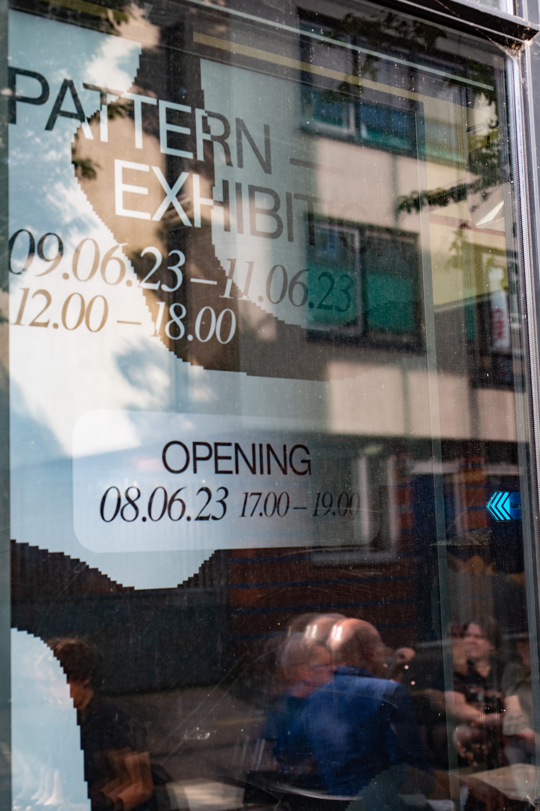
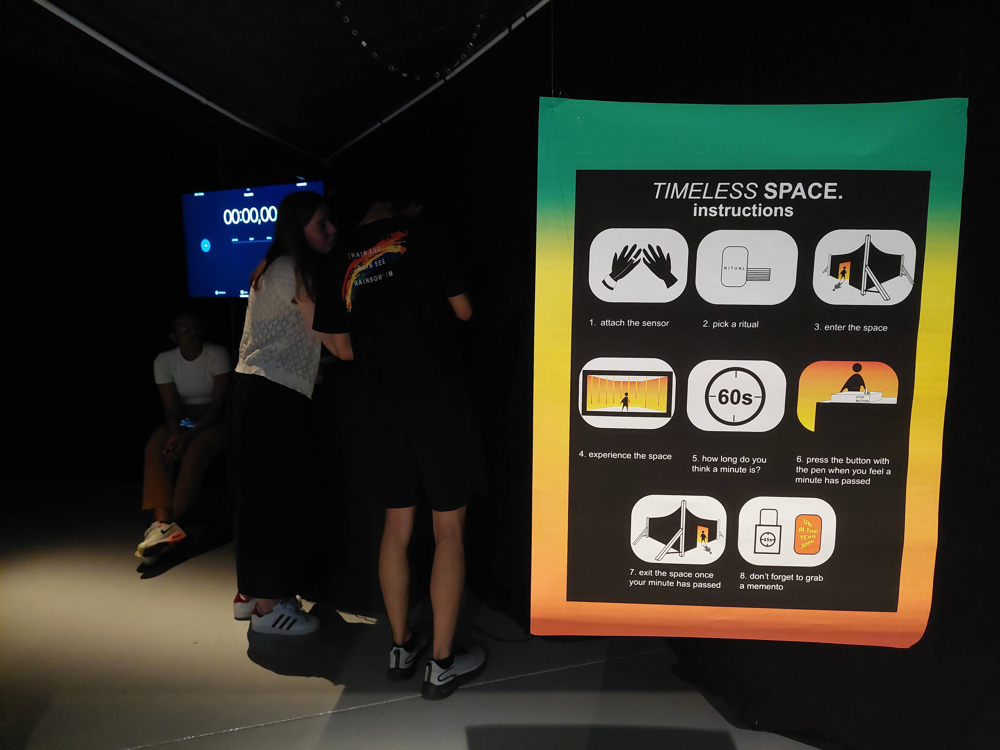
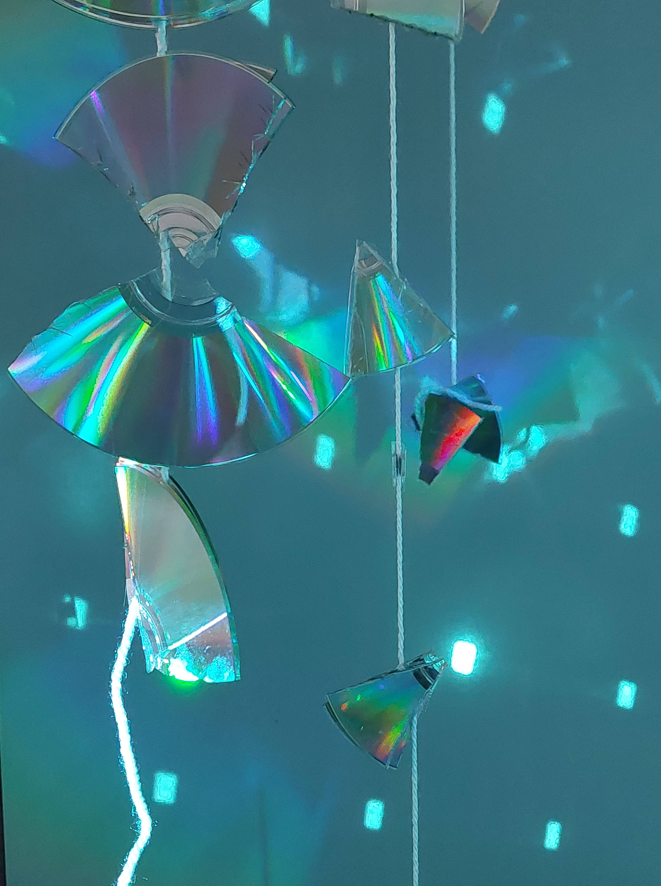
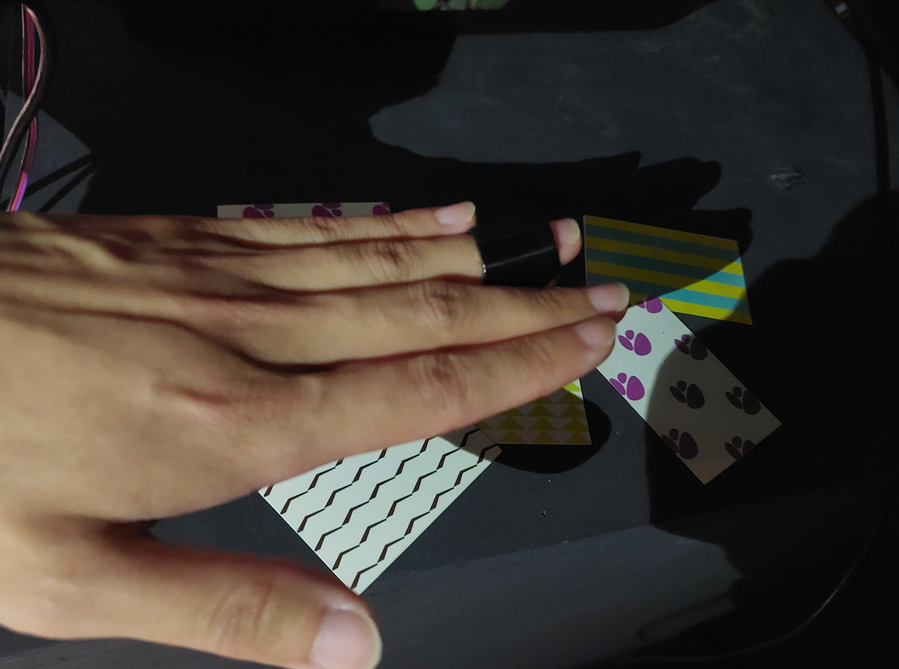
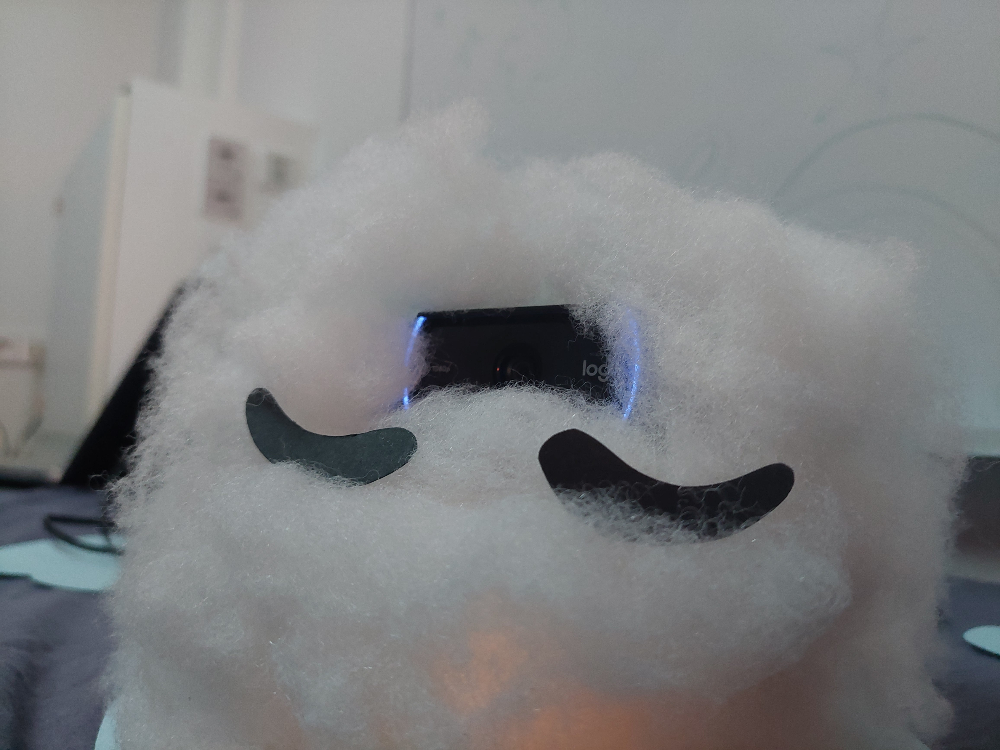
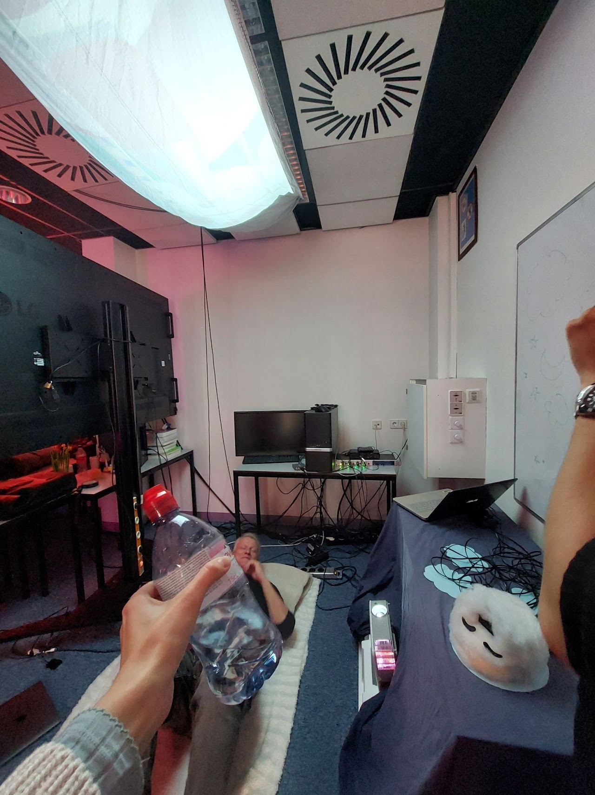
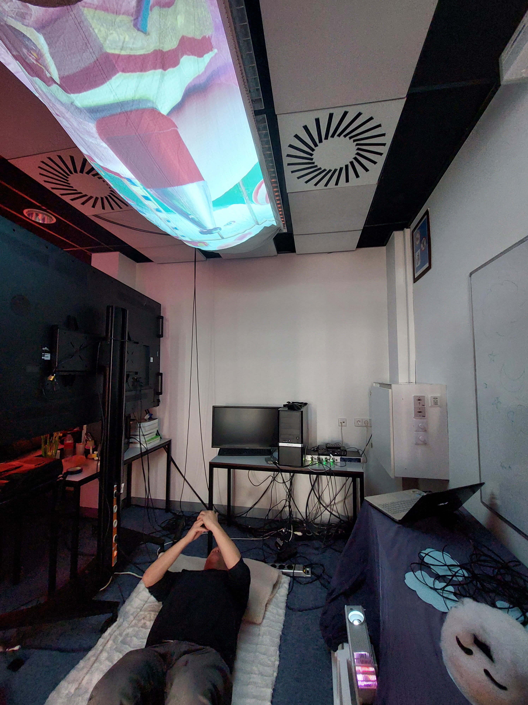
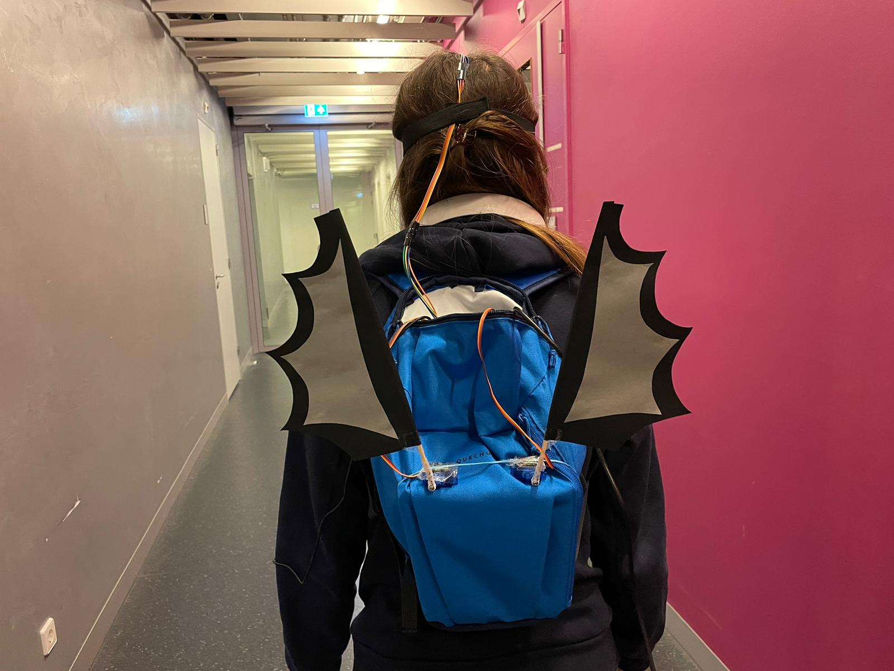
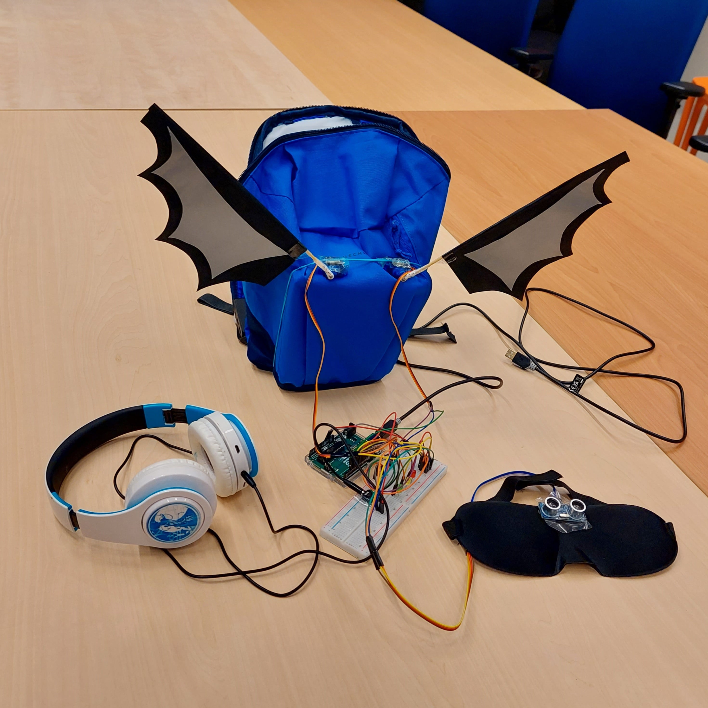
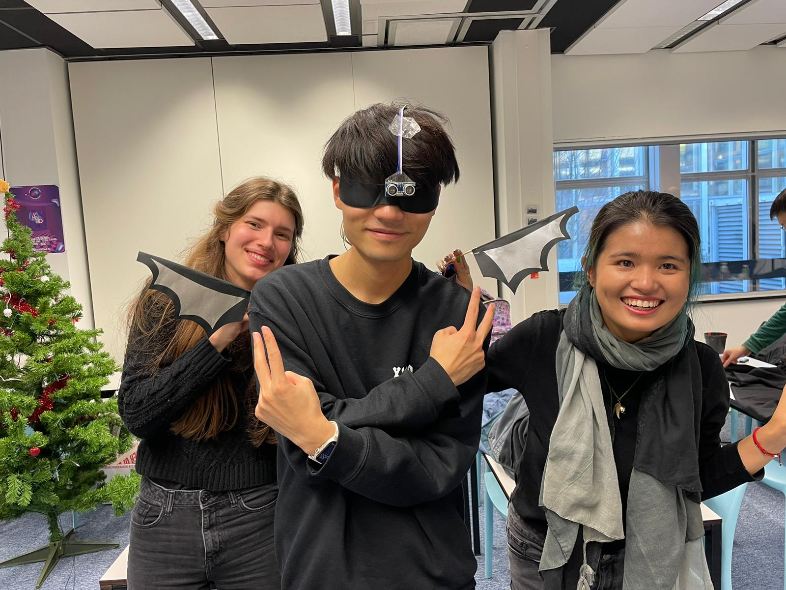

Anna Sivera van der Sluijs
Timeless Space
spatial design / exhibition Created together with Isa-Jane Ensing and Phila Hillie This interactive, immersive instalation makes participants aware of their personal and subjective experience of time by magnifying and reflecting their bodily and thereby mental state through the measuring of their heartbeat. The heart is understood as a personal and internal ticking clock. To visualise this bodily experience of time, we explored how time can become tangible and influenced by technology. The final experience is an enclosed timeless space in which participants can experience their own unique sense of time. This project was part of a hosted exhibition in the V2 gallery.




Dreamreader
AI / image recognition Created together with Rick Heemskerk This intelligible AI creature is hooked up to a specialized computer that can accurately analyse the electric signals going through the creature. Optimized for this purpose, the computer can read and project the creature's thoughts, including a glimpse into its dreams when asleep. Interactions with the creature when awake will shape the creature's projected dreams, as well as your own might be.



Bat Experience
sensory modalities / wearable / arduino Created together with Yiming Tong and Xiaotian Ma With various Arduino sensors, this project evokes a new understanding of our physical space and consciousness by adapting the special sensory experience that bats have, to humans. Bats navigate their environment using echolocation, they listen to ultrasonic sound that echoes off objects in a space for three-dimensional localization. By using an ultrasonic distance sensor in combination with headphones, we made echolocation available to humans. By making the device wearable, humans can navigate through space as a bat. We used various other sensors, motors and wearables to make the bat experience complete.



Cat-Computer Interaction
prize winning / animal-computer interaction / empirical research Created together with Fatima Mashood, Isa-Jane Ensing and Yunjie Smeets A really impressive project. The inventiveness shown here is really quite something, both in the formulation of your design principles and the prototype testing. Also worth highlighting is the attention to detail with which you conducted the experiment. Since domesticated animals such as cats are increasingly exposed to modern technologies, this research explores the field of cat-computer interaction (CCI). Through the examination of emerging CCI literature, we investigate how technology can effectively cater to cats physical, cognitive, and emotional needs. The study contributes an overview of current findings as CCI principles: five heuristics that cover the specific elements needed for successful cat-centered design, which can be applied when designing for CCI. As a first evaluation, the heuristic on cat vision was tested in an empirical experiment with three cats.

Evaluating Art-Based Science Communication of Quantum Physics
thesis / quantum / science communication / art / academic writing This research proposes art-based science communication as an effective approach for the science communication of quantum physics. To study its effects, the researcher created an art-based intervention representing the quantum phenomenon of wave-particle duality, in collaboration with quantum experts. The intervention was exhibited in a public library, and its effects on citizens were evaluated using the framework from research group IMPACTLAB. The findings suggest that art-based science communication supports engagement and can thereby contribute to the successful science communication of complex and abstract scientific concepts, such as quantum physics.
Sprouting New Cosmologies: Decentering Space through Speculaitve Astrobotany
posthumanism / speculative / philosophy / academic writing Thank you very much for your engaging, articulate and thought-provoking paper. (...) I found the section on Plants as astronauts especially intriguing. And of course your own speculation about life on Alpha Centauri which makes the discussion more focused and gives a concrete example of the challenges but also opportunities! This paper examines the entrenched anthropocentric paradigms in space exploration, decentering them through speculative fabulation by taking the stance of the easily overlooked but indispensable plants as astronauts, referred to as astrobotany. As a form of artistic research that embodies the plants’ perspective, the paper culminates in a speculative design envisioning the terraforming of the exoplanet Proxima Centauri b by plants.
Epistemic Agency in an AI-Mediated Future: Participatory Ethical Deliberation through Moral Imagination Workshop
thesis / quantum / science communication / art / academic writing Artificial intelligence (AI) is an emergent technology that is being rapidly integrated throughout society. It assists or replaces epistemic tasks that have traditionally required human cognitive effort, leaving ethical uncertainty and regulatory voids in its wake. In becoming intertwined in our knowledge ecology as a poietic technology, AI especially challenges the concept of epistemic agency, the control we have over our beliefs. I argue that participatory ethical deliberation is necessary to examine the disruption of human epistemic agency by AI. To enable such participatory ethical deliberation, this study proposes and evaluates a moral imagination workshop in a local neighborhood. With elements of speculation and art-based engagement, the workshop empowers participants to express their desired AI-mediated future with regards to epistemic agency through the making of “Magic Machines”. In doing so, it enables the public to make meaningful contribution to philosophical discourse from which it is too often excluded.
Dark Patterns
design / interactive essay Congrats on this work, I think it is outstanding. You managed to combine different complex tasks (research, writing, designing, illustration, prototyping, publishing, referencing, typography) into one coherent final product, that is convincing in its concept. This interactive visual essay examines and critiques the use of "dark patterns": misleading design elements. By utilizing an interactive medium, the essay fosters understanding through both a review of the literature and firsthand experience, as dark patterns are integrated directly into the user interface.